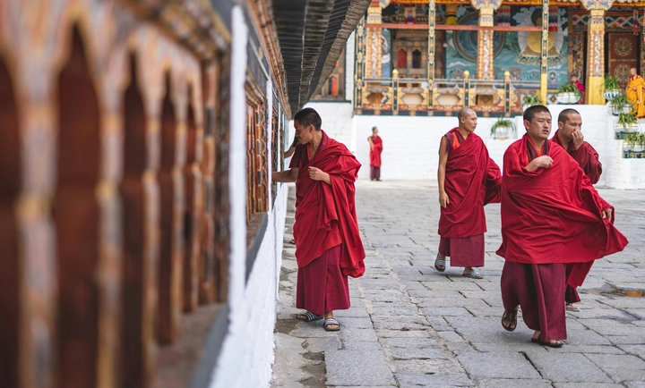
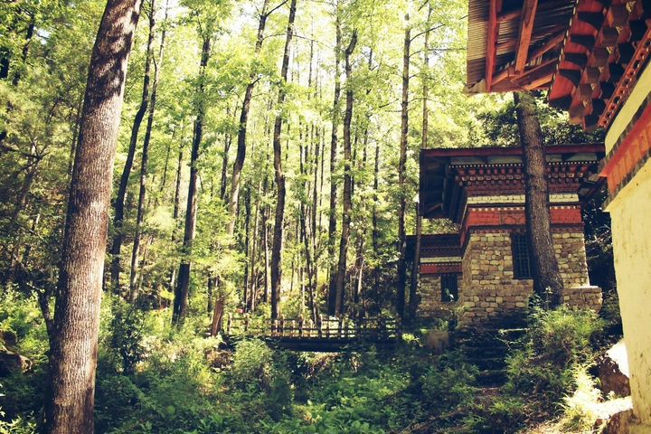
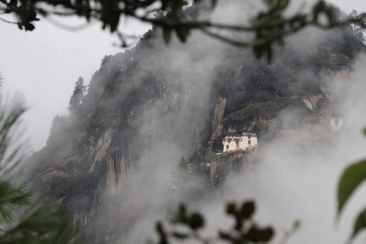
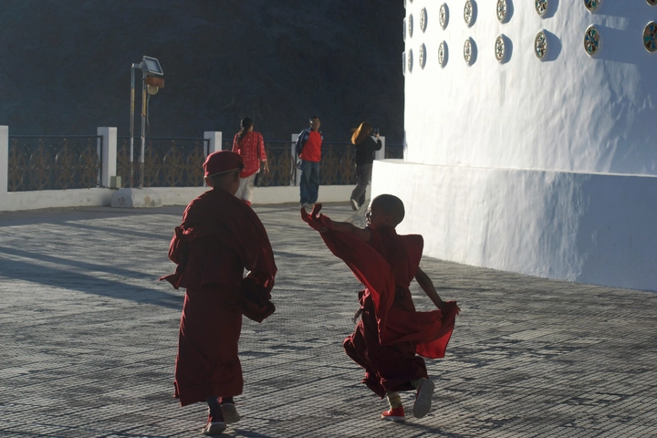

Khám pha Bhutan: Quốc gia hạnh phúc nhất thế giới
Bhutan – Vương quốc nhỏ bé nằm giữa những dãy núi hùng vĩ của Himalaya – từ lâu đã được biết đến như một nơi bảo tồn văn hóa và thiên nhiên nguyên sơ hiếm hoi giữa thế giới hiện đại hóa nhanh chóng. Quốc gia này duy trì lối sống cân bằng, đặt hạnh phúc của người dân lên trên các chỉ số kinh tế, nhờ đó Bhutan trở thành hình mẫu về sự kết hợp giữa truyền thống, tâm linh và phát triển bền vững.
Với những tu viện trên núi cao, cảnh quan thiên nhiên hùng vĩ và những lễ hội đầy màu sắc, Bhutan không chỉ hấp dẫn du khách mà còn là nơi khám phá một nền văn hóa vẫn giữ nguyên bản sắc qua nhiều thế kỷ. Hôm nay, hãy cùng khám phá những nét độc đáo của Bhutan – từ con người, kiến trúc, phong tục cho đến thiên nhiên và triết lý sống đặc biệt của quốc gia này.
1. Giới thiệu về Bhutan - Vương quốc hạnh phúc
Bhutan là một quốc gia nhỏ bé nằm nép mình giữa dãy núi Himalaya, với diện tích chỉ khoảng 38.000 km² và dân số chưa đến 800.000 người, nhưng lại nổi bật trên bản đồ thế giới nhờ chỉ số Gross National Happiness (Tổng hạnh phúc quốc gia) – một triết lý đo lường sự thịnh vượng không dựa trên GDP mà dựa trên hạnh phúc, sức khỏe tinh thần, văn hóa, giáo dục và môi trường sống của người dân.
Thay vì chạy theo tốc độ phát triển kinh tế thông thường, Bhutan lựa chọn một con đường riêng, ưu tiên sự cân bằng giữa hiện đại hóa và bảo tồn bản sắc truyền thống. Nhờ vậy, quốc gia này vẫn giữ được những ngôi làng yên bình, những tu viện trên núi cao và những phong tục lâu đời mà không bị xâm lấn bởi toàn cầu hóa.

Người dân Bhutan vẫn mặc trang phục truyền thống hàng ngày – Gho cho nam và Kira cho nữ – duy trì các phong tục, lễ hội và nghi lễ tôn giáo, từ đó hình thành một đời sống cộng đồng gắn bó, hòa hợp và giàu giá trị tinh thần. Sự kết hợp hài hòa giữa văn hóa, thiên nhiên hùng vĩ và tâm linh sâu sắc này khiến Bhutan trở thành một “ốc đảo hạnh phúc” hiếm hoi, nơi mà sự thanh bình và vẻ đẹp nguyên sơ của thiên nhiên vẫn được bảo tồn, tạo ra một không gian sống vừa giản dị, vừa đầy cảm hứng giữa thế giới biến đổi nhanh chóng.
Không chỉ là điểm đến du lịch độc đáo, Bhutan còn là minh chứng sống động cho triết lý phát triển bền vững, nơi mà con người và thiên nhiên cùng tồn tại trong sự hài hòa, và mỗi khoảnh khắc đời sống đều được trân trọng.
2. Địa lý và khí hậu đặc trưng của Bhutan
Bhutan nằm trọn trong lòng dãy Himalaya, nơi các ngọn núi cao chót vót, thung lũng hẹp và dòng sông băng chạy xuyên suốt cả quốc gia. Địa hình đa dạng của Bhutan tạo ra một hệ sinh thái phong phú và đặc biệt, từ rừng mưa nhiệt đới ở phía nam, rừng ôn đới ở trung bộ, cho đến vùng núi cao lạnh giá ở phía bắc. Độ cao thay đổi từ khoảng 200 m ở đồng bằng phía nam lên tới hơn 7.000 m ở vùng núi bắc, dẫn đến khí hậu rất khác biệt theo từng vùng.
Phía nam có khí hậu nhiệt đới ẩm, thích hợp với nông nghiệp trồng lúa và cây ăn quả, trong khi trung bộ có khí hậu ôn đới mát mẻ, là nơi phát triển trồng ngô, lúa mì và rau củ. Ở phía bắc, vùng núi cao thường bị bao phủ bởi tuyết và băng vĩnh cửu, chỉ thích hợp cho chăn nuôi gia súc như dê và bò yak, và các loài thực vật chịu lạnh.
Sự đa dạng địa hình không chỉ tạo ra cảnh quan thiên nhiên ngoạn mục, với thác nước, sông băng, đỉnh núi phủ tuyết và thung lũng sâu, mà còn ảnh hưởng sâu sắc đến lối sống và văn hóa của người dân Bhutan. Mỗi thung lũng, ngôi làng hay thành phố nhỏ đều phát triển một cách riêng biệt, với kiến trúc, phong tục, và phương thức nông nghiệp thích nghi với điều kiện tự nhiên xung quanh.

Khí hậu và địa hình hiểm trở giúp bảo tồn văn hóa truyền thống, bởi sự cô lập tự nhiên hạn chế sự du nhập của các ảnh hưởng bên ngoài, khiến Bhutan vẫn giữ được bản sắc nguyên sơ trong trang phục, lễ hội, kiến trúc và đời sống tinh thần.
Hơn nữa, vị trí núi non và khí hậu đặc trưng cũng tạo ra cơ hội du lịch bền vững, khi khách muốn đến Bhutan phải đi qua những cung đường hẻo lánh, trekking trên các ngọn núi cao hay khám phá các thung lũng xa xôi. Nhờ vậy, Bhutan không bị quá tải khách du lịch, đồng thời thiên nhiên vẫn được bảo vệ một cách nghiêm ngặt.
Những cánh rừng rậm, sông suối trong lành, và thảm thực vật đa dạng không chỉ là kho báu thiên nhiên mà còn là nguồn cảm hứng bất tận cho nghệ thuật, văn hóa và đời sống tâm linh của người dân Bhutan.
Nhờ sự kết hợp độc đáo giữa địa hình hiểm trở, khí hậu đa dạng và thiên nhiên hoang sơ, Bhutan trở thành một quốc gia không chỉ hấp dẫn du khách mà còn là minh chứng sống cho triết lý sống hòa hợp với thiên nhiên và bảo tồn bản sắc văn hóa.
Mỗi bước chân trên đất Bhutan đều đem đến trải nghiệm vừa kỳ vĩ, vừa tĩnh lặng, khiến nơi đây trở thành một “ốc đảo nguyên sơ” thực sự giữa thế giới hiện đại ồn ào.
3. Văn hóa và phong tục truyền thống
Văn hóa Bhutan là sự kết hợp tinh tế giữa truyền thống Phật giáo, lối sống cộng đồng và những giá trị lâu đời của người dân bản địa. Người Bhutan vẫn mặc trang phục truyền thống Gho (nam) và Kira (nữ) trong sinh hoạt hàng ngày, từ đi học, đi làm đến tham gia các sự kiện quan trọng. Việc giữ gìn trang phục truyền thống không chỉ là vấn đề thẩm mỹ mà còn là biểu tượng của bản sắc dân tộc, nhắc nhở mỗi người về giá trị lịch sử và tinh thần cộng đồng.
Các lễ hội truyền thống, được gọi là Tshechu, diễn ra hầu hết vào mùa thu, thu hút cả cộng đồng và du khách tham dự. Trong lễ hội, các nhà sư thực hiện điệu múa mặt nạ Cham, kể lại những câu chuyện Phật giáo, những chiến công và bài học đạo đức từ các vị thần bảo hộ đất nước. Âm nhạc truyền thống, nhạc cụ dân gian và những bài hát cổ xưa vẫn được bảo tồn, tạo nên một không gian sống vừa thấm đẫm tâm linh vừa rực rỡ sắc màu văn hóa.
Văn hóa Bhutan không chỉ thể hiện ở trang phục và lễ hội mà còn thấm sâu vào đời sống hàng ngày: cách cư xử, cách chào hỏi, sinh hoạt gia đình, cách tôn trọng người lớn tuổi và cộng đồng. Người Bhutan đề cao giá trị hòa hợp với thiên nhiên, giữ mối quan hệ bền chặt giữa con người và môi trường xung quanh. Nhờ vậy, Bhutan là một quốc gia nơi văn hóa không bị mai một mà còn trở thành nền tảng vững chắc cho cuộc sống hạnh phúc và bền vững.
4. Kiến trúc độc đáo: Các tu viện và pháo đài Dzong
Kiến trúc Bhutan là sự kết hợp độc đáo giữa tôn giáo, nghệ thuật và kỹ thuật xây dựng truyền thống. Điểm nổi bật nhất là các Dzong, những pháo đài kiêm tu viện vừa là trung tâm hành chính vừa là nơi tu hành của các nhà sư. Dzong được xây dựng bằng đá và gỗ, không sử dụng đinh sắt, với tường dày, mái nghiêng và họa tiết tinh xảo, giúp công trình bền vững qua nhiều thế kỷ.
Một số tu viện nổi tiếng như Paro Taktsang, hay còn gọi là Hang Hổ, được xây dựng trên vách núi cheo leo, cao gần 3.000 mét so với mực nước biển, trở thành biểu tượng huyền bí và thu hút du khách từ khắp nơi trên thế giới. Các Dzong không chỉ phục vụ mục đích hành chính và tôn giáo mà còn là trung tâm cộng đồng, nơi diễn ra các lễ hội, buổi học kinh điển và các hoạt động văn hóa.
Kiến trúc Bhutan phản ánh triết lý sống hài hòa với thiên nhiên, khi các công trình thường hòa quyện với cảnh quan xung quanh, tận dụng địa hình núi non và ánh sáng tự nhiên. Mỗi Dzong, tu viện hay ngôi nhà đều mang một câu chuyện riêng, phản ánh niềm tin, lịch sử và nghệ thuật của người dân Bhutan. Đây không chỉ là những công trình vật chất mà còn là tác phẩm nghệ thuật sống, minh chứng cho sự kết hợp tinh tế giữa văn hóa, tâm linh và thiên nhiên.
5. Phong tục tôn giáo Phật giáo trong đời sống hàng ngày
Phật giáo là trung tâm tinh thần và triết lý sống của Bhutan, thấm sâu vào mọi khía cạnh từ giáo dục, đời sống cộng đồng cho đến lễ hội và văn hóa. Người dân Bhutan thường niệm kinh, treo cờ cầu nguyện và xây stupas trên các đỉnh đồi, nhằm mang lại bình an cho bản thân, gia đình và cộng đồng. Những nghi lễ này không chỉ diễn ra trong tu viện mà còn xuất hiện trong đời sống hàng ngày, ảnh hưởng đến cách cư xử, sinh hoạt và các quyết định quan trọng.
Mỗi ngôi làng, mỗi thung lũng đều có các tu viện nhỏ, nơi các nhà sư hướng dẫn trẻ em học kinh và tham gia nghi lễ. Phong tục tôn giáo giúp người Bhutan duy trì sự bình an nội tâm, lối sống hòa hợp với thiên nhiên, tôn trọng con người khác và gắn kết cộng đồng. Ngoài ra, Phật giáo còn định hình cách nhìn nhận hạnh phúc: không chỉ dựa trên vật chất mà dựa vào sự hài hòa giữa tinh thần, con người và môi trường sống.

Nhờ sự thấm nhuần Phật giáo trong đời sống hàng ngày, Bhutan trở thành quốc gia nơi niềm tin, văn hóa và thiên nhiên hòa quyện, mang đến cảm giác bình yên, khiến mỗi trải nghiệm – dù là sinh hoạt thường nhật hay du lịch khám phá – đều trở nên đáng giá và đầy ý nghĩa. Triết lý sống này chính là nền tảng giúp Bhutan được thế giới ngưỡng mộ như “Vương quốc hạnh phúc”, nơi con người và thiên nhiên cùng tồn tại trong sự hòa hợp bền vững.
6. Ẩm thực truyền thống Bhutan
Ẩm thực Bhutan nổi bật với vị cay nồng và sự kết hợp đơn giản nhưng tinh tế, phản ánh văn hóa và khí hậu địa phương. Món ăn tiêu biểu nhất là Ema Datshi, được chế biến từ ớt tươi và phô mai địa phương, trở thành biểu tượng của ẩm thực Bhutan. Thực phẩm thường dựa vào nông sản địa phương như gạo đỏ, khoai tây, các loại rau và gia súc chăn thả trên núi, đảm bảo sự tươi ngon và tự nhiên.
Người Bhutan ăn theo phong tục đơn giản nhưng đầy đủ dinh dưỡng, bữa ăn thường kết hợp cơm, rau, thịt, phô mai và ớt. Các món ăn được chế biến sao cho giữ nguyên hương vị tự nhiên và bổ dưỡng, đồng thời mang giá trị tinh thần cao, thể hiện sự gắn bó giữa con người và thiên nhiên. Ẩm thực Bhutan không chỉ thỏa mãn vị giác mà còn là một phần trải nghiệm văn hóa: từ cách ăn uống, chia sẻ bữa ăn đến việc kết hợp các nghi lễ tôn giáo, tất cả đều phản ánh lối sống cộng đồng và tôn trọng thiên nhiên.
Ẩm thực cũng là yếu tố hấp dẫn du khách, giúp họ khám phá văn hóa sống và triết lý hạnh phúc của Bhutan thông qua từng món ăn cay nồng, nóng hổi nhưng đậm đà tình người.
7. Thiên nhiên nguyên sơ và đa dạng sinh học
Bhutan là một trong những quốc gia bảo tồn thiên nhiên tốt nhất thế giới, với hơn 70% diện tích được phủ rừng và bảo vệ nghiêm ngặt. Các khu bảo tồn như Royal Manas National Park và Jigme Dorji National Park là nơi sinh sống của nhiều loài động vật quý hiếm như hổ, tê giác, gấu và voi. Hệ sinh thái phong phú này không chỉ mang giá trị sinh học mà còn trở thành nguồn cảm hứng văn hóa và tâm linh cho người dân.
Địa hình hiểm trở và khí hậu đa dạng tạo ra cảnh quan ngoạn mục, từ thung lũng sâu, sông băng trong lành, đỉnh núi phủ tuyết đến rừng rậm xanh mướt. Thiên nhiên Bhutan không chỉ bảo vệ môi trường mà còn đóng vai trò cân bằng sinh thái và duy trì lối sống truyền thống, giúp người dân duy trì nông nghiệp bền vững và gắn bó với thiên nhiên. Du khách khi đến Bhutan thường bị cuốn hút bởi sự hùng vĩ, nguyên sơ và thanh bình, trải nghiệm sự gần gũi hiếm có với thiên nhiên chưa bị phá hủy bởi hiện đại hóa.
8. Du lịch Bhutan: trải nghiệm văn hóa và thiên nhiên
Du lịch Bhutan mang đậm tính bền vững và trải nghiệm cá nhân, nơi du khách không chỉ tham quan mà còn học hỏi văn hóa, tham gia lễ hội và cảm nhận triết lý sống của người dân. Quốc gia này áp dụng chính sách “du lịch có trách nhiệm”, với phí tham quan cao để hạn chế số lượng khách, đảm bảo trải nghiệm chất lượng và bảo vệ môi trường.
Các điểm đến nổi tiếng bao gồm Paro Taktsang, thung lũng Phobjikha, thủ đô Thimphu và Punakha Dzong. Ngoài tham quan, du khách còn được trekking trên những cung đường núi hiểm trở, tham gia vào đời sống làng bản, thử thách kỹ năng sinh tồn và thưởng thức ẩm thực địa phương. Du lịch Bhutan vì vậy không chỉ là thăm cảnh đẹp mà còn là hành trình tâm linh, giúp con người tĩnh lại, chiêm nghiệm về hạnh phúc và sự cân bằng giữa tự nhiên và văn hóa.
9. Lễ hội và sự kiện văn hóa độc đáo
Bhutan nổi tiếng với các lễ hội Tshechu – những sự kiện tôn giáo diễn ra hàng năm, thu hút cả cộng đồng địa phương và khách du lịch. Trong lễ hội, các nhà sư biểu diễn múa mặt nạ Cham, tái hiện các câu chuyện Phật giáo, chiến công và bài học đạo đức. Lễ hội không chỉ là sự kiện giải trí mà còn là cơ hội giáo dục, giao lưu và củng cố giá trị cộng đồng.

Ngoài lễ hội, Bhutan còn tổ chức các sự kiện văn hóa, thể thao truyền thống và các buổi thi đấu về nghệ thuật, âm nhạc dân gian. Những hoạt động này giúp bảo tồn văn hóa, nâng cao nhận thức về bản sắc dân tộc và tạo ra không gian để người dân, đặc biệt là thế hệ trẻ, gắn kết với lịch sử và phong tục truyền thống.
10. Bhutan – Vương quốc hạnh phúc và triết lý sống
Bhutan nổi bật trên thế giới không chỉ nhờ cảnh quan thiên nhiên và văn hóa mà còn nhờ triết lý phát triển độc đáo, đặt hạnh phúc và sự cân bằng con người lên trên lợi nhuận kinh tế. Tổng hạnh phúc quốc gia (GNH) bao gồm sức khỏe tinh thần, giáo dục, bảo vệ môi trường, bảo tồn văn hóa và quản lý xã hội, tạo nên một mô hình phát triển bền vững hiếm thấy.
Triết lý này không chỉ thay đổi cách sống của người dân Bhutan mà còn truyền cảm hứng cho du khách và các quốc gia khác. Ở Bhutan, con người học cách trân trọng từng khoảnh khắc, sống hòa hợp với thiên nhiên, và duy trì bản sắc văn hóa trong đời sống hiện đại. Chính nhờ triết lý này, Bhutan được gọi là “Vương quốc hạnh phúc” – nơi mà thiên nhiên, văn hóa, tâm linh và con người cùng tồn tại trong sự hài hòa bền vững, mang lại cảm giác bình yên và trọn vẹn mà ít nơi nào trên thế giới có được.